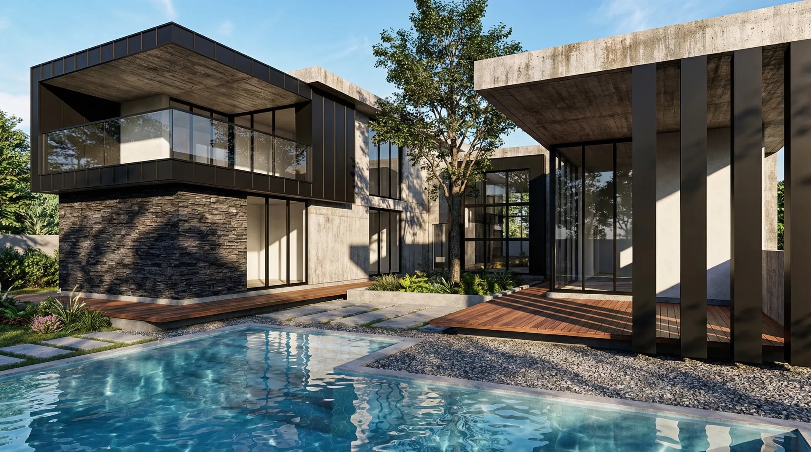

Diseño para construir, no solo para impresionar.
No separo la arquitectura de la ingeniería ni la técnica de la tecnología. Cada proyecto parte de un único modelo digital del que se generan las visualizaciones, los planos y la información necesaria para construir con precisión.
Mi trabajo combina ingeniería civil, criterio estructural y sensibilidad arquitectónica para que la estética y la viabilidad técnica avancen en la misma dirección. Paralelamente, desarrollo aplicaciones y herramientas propias que optimizan mi flujo de trabajo y me permiten ofrecer soluciones más eficientes que las de un proceso convencional.
No busco únicamente representar proyectos. Busco comprenderlos, optimizarlos y hacerlos mejores antes de que lleguen a la obra.
Siete aplicaciones escritas para resolver lo que el trabajo pedía y no existía. Las tres primeras resuelven obra.
El navegador bloqueó el sonido · actívelo en el control de volumen